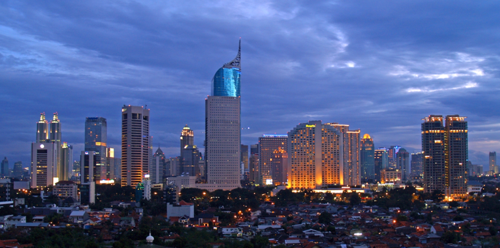
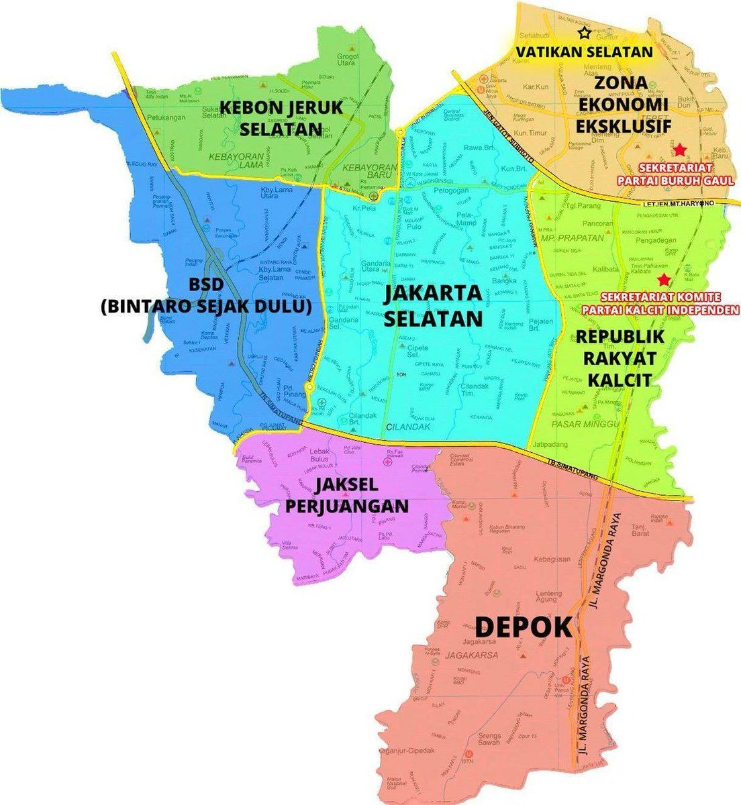
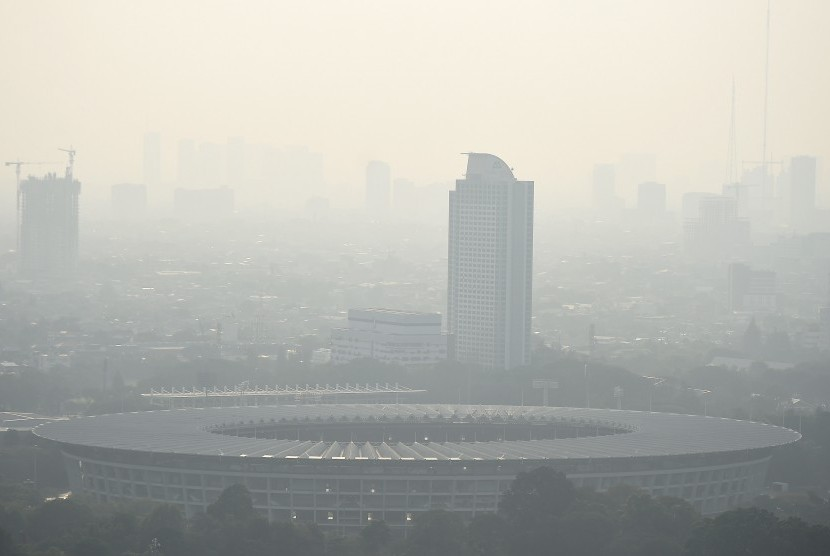

Sejarah

Jakarta indonesia adalah ibu kota dan kota terbesar Indonesia. Terletak di estuari Sungai Ciliwung, di bagian barat laut Jawa, daerah ini telah lama menopang pemukiman manusia. Bukti bersejarah dari Jakarta berasal dari abad ke-4 M, saat ia merupakan sebuah permukiman dan pelabuhan Hindu. Kota ini telah diklaim secara berurutan oleh kerajaan bercorak India Tarumanegara, Kerajaan Sunda Hindu, Kesultanan Banten Muslim, dan oleh pemerintahan Belanda, Jepang, dan Indonesia. Hindia Belanda membangun daerah tersebut sebelum direbut oleh Kekaisaran Jepang semasa Perang Dunia II dan akhirnya menjadi merdeka sebagai bagian dari Indonesia.
Jakarta telah dikenal dengan beberapa nama. Ia disebut Sunda Kalapa selama periode Kerajaan Sunda dan Jayakarta, Djajakarta, atau Jacatra selama periode singkat Kesultanan Banten. Setelah itu, Jakarta berkembang dalam tiga tahap. "Kota Tua Jakarta", yang dekat dengan laut di utara, berkembang antara 1619 dan 1799 pada era VOC. "Kota baru" di selatan berkembang antara 1809 dan 1942 setelah pemerintah Belanda mengambil alih penguasaan Batavia dari VOC yang gagal yang sewanya telah berakhir pada 1799. Yang ketiga adalah perkembangan Jakarta modern sejak proklamasi kemerdekaan pada 1945. Di bawah pemerintahan Belanda, ia dikenal sebagai Batavia (1619 s/d 1949), dan Djakarta (dalam bahasa Belanda) atau Jakarta, selama pendudukan Jepang dan masa modern.
Geografis

akarta berlokasi di sebelah utara Pulau Jawa, di muara Ciliwung, Teluk Jakarta. Seluruh wilayah Jakarta terletak di dataran rendah pada ketinggian rata-rata 8 meter dpl dengan titik tertinggi Jakarta adalah 91 meter dpl berada di Kawasan Buperta Cibubur, Cipayung, Jakarta Timur yang merupakan ujung terendah dari formasi dataran Jonggol-Jatiluhur. Sementara titik terendahnya yaitu -1 meter dpl dengan lokasi di wilayah Muara Baru dan Pluit, Jakarta Utara di mana daerah tersebut mengalami fenomena penurunan tanah sejak lama. Karena berada di dataran rendah, mengakibatkan banyak dari wilayah Jakarta sering dilanda banjir, terlebih sebelah selatan Jakarta merupakan daerah pegunungan dengan curah hujan tinggi. Jakarta dilewati oleh 13 sungai yang semuanya bermuara ke Teluk Jakarta. Sungai yang terpenting ialah Ciliwung, yang membelah kota menjadi dua. Sebelah timur dan selatan Jakarta berbatasan dengan provinsi Jawa Barat dan di sebelah barat berbatasan dengan provinsi Banten.
Kepulauan Seribu adalah kabupaten administratif yang terletak di Teluk Jakarta, seluruh wilayahnya berbentuk gugusan kepulauan, dengan 105 pulau terletak sejauh 45 km (28 mil) sebelah utara Teluk Jakarta.
Iklim

JJakarta memiliki suhu udara yang panas dan kering atau beriklim tropis. Terletak di bagian barat Indonesia, Jakarta mengalami puncak musim penghujan pada bulan Januari dan Februari dengan rata-rata curah hujan 350 milimeter dengan suhu rata-rata 27 °C. Curah hujan antara bulan Januari dan awal Februari sangat tinggi, pada saat itulah Jakarta dilanda banjir setiap tahunnya, dan puncak musim kemarau pada bulan Agustus dengan rata-rata curah hujan 60 milimeter . Bulan September dan awal Oktober adalah hari-hari yang sangat panas di Jakarta, suhu udara dapat mencapai 40 °C . Suhu rata-rata tahunan berkisar antara 25°-38 °C (77°-100 °F)